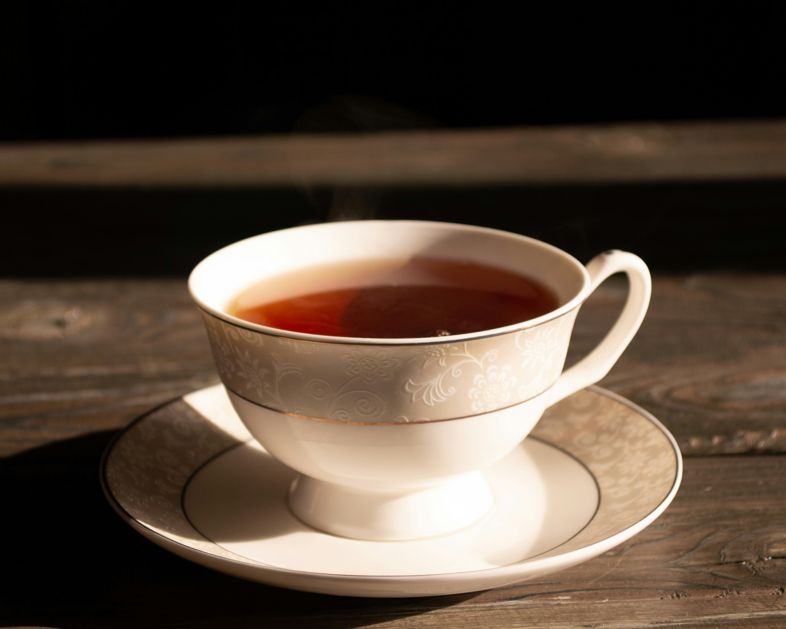
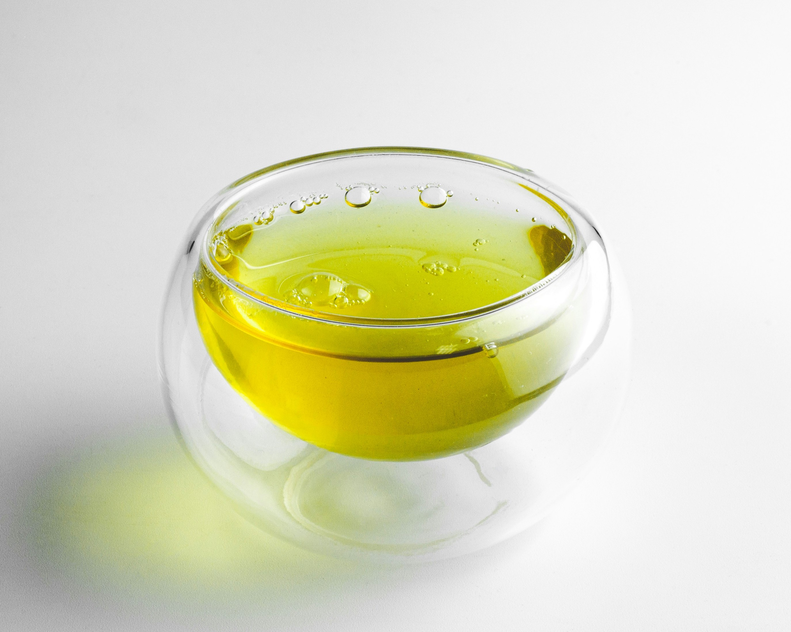
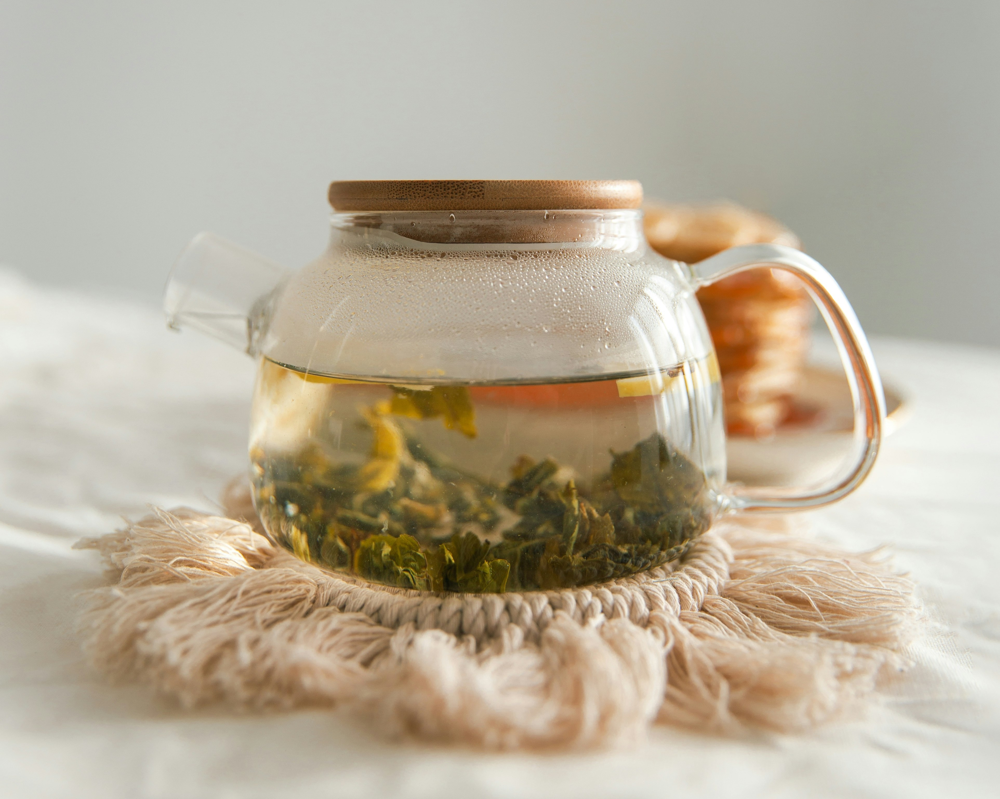
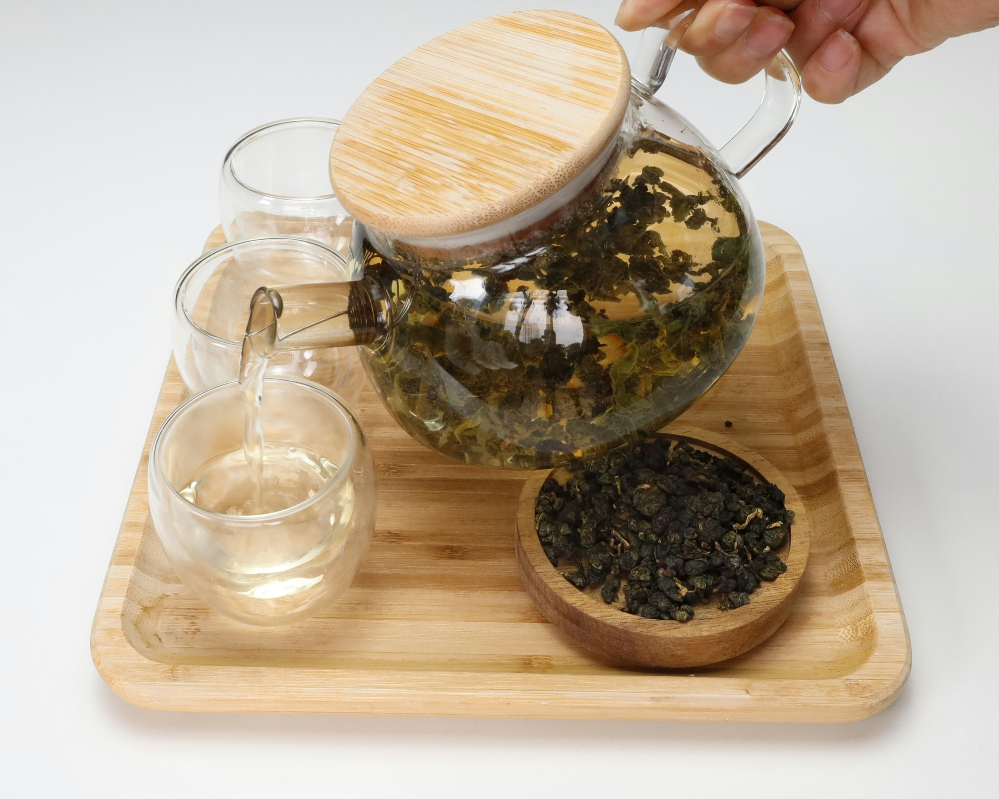
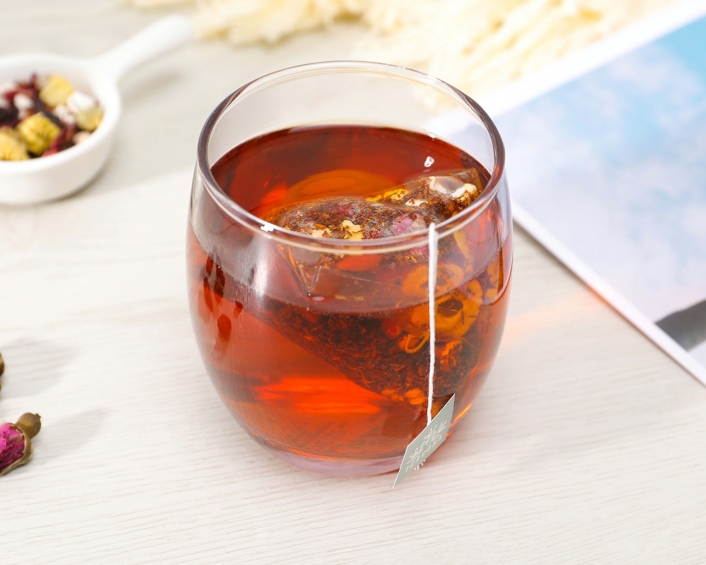
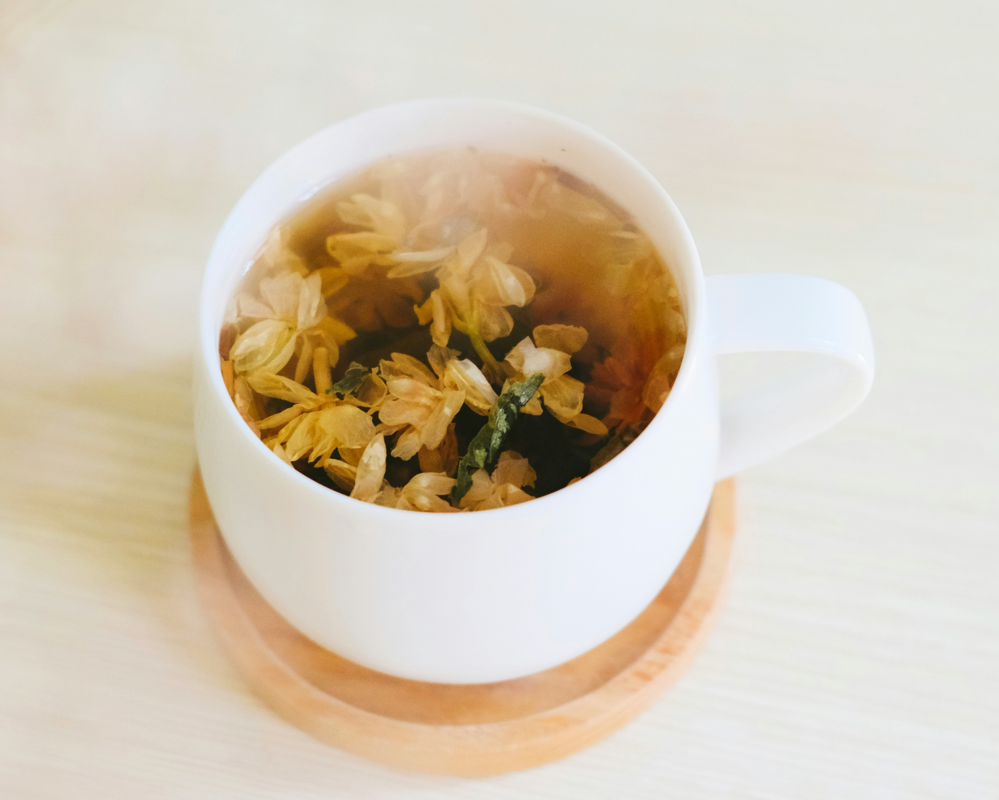

Tea is a beverage made by soaking the leaves of the Camellia sinensis plant in hot or cold water.
Depending on the type of tea, the leaves are prepared either by drying, steaming, rolling, or oxidizing. These produce the signature color, aroma, and notes associated with each tea variant.
The difference boils down to historical trading routes—the word "chai" was used in India and most of Asia, while the word "tea" was used in the West. In the West, the word "chai" often points specifically to chai masala — a type of tea mixed with milk and spices.
Explore the fragrant world of tea.

Distinguished by a strong flavor and reddish-brown color produced by the long oxidation process.
Read More
Made by quickly boiling the tea leaves after harvesting to prevent oxidation or withering. Distinguished by a mild earthy and grassy aroma as well as a greenish hue.
Read More
Made by using young or minimally processed tea leaves to achieve a lighter flavor and aroma. Distinguished by a yellow hue.
Read More
Made by oxidizing the tea leaves under direct sunlight and allowing them to wither. Taste can vary based on the degree of oxidation. Flavors can range from woody and thick to light and fresh aromas.
Read More
Made by fermenting the tea leaves, which gives it a unique bright red color and a sweet nutty flavor. Rooibos tea is caffeine-free.
Read More
Not seen as an actual "tea" beacause it's made by using herbs, plants, or spices instead of the Camellia sinensis plant. Due to the variety of plants that can be used, the taste can vary from floral to spicy to earthy aromas.
Read More